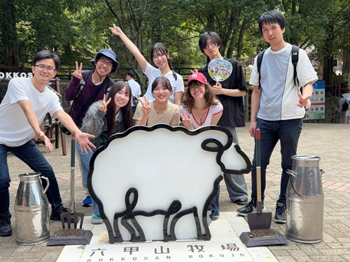
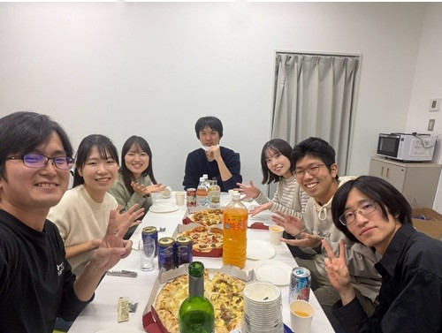

京都工芸繊維大学 応用化学課程 高分子材料デザインコース
高分子合成化学研究室 KAMBAYASHI LAB.
研究室見学・配属を考えている皆さんへ
神林研究室が大切にしていること
- 世界でまだ誰も知らない「オリジナルの高分子」を、自分の手でつくること
- 教員と学生が、共同研究者として一緒に研究をつくること
- 研究を通じて、自分で考え、解決する力を身につけること
研究について
高分子合成化学を中心に、これまでにない構造や機能を持つ「オリジナルの高分子」を生み出す研究をしています。既存のモノマーを重合するだけでなく、モノマーの分子設計・合成や、新しい重合反応の開発から取り組みます。
有機合成化学、有機金属化学、高分子化学など、幅広い化学の知識を使います。「自分の手で新しい分子や材料をつくってみたい」という人を歓迎します。具体的なテーマはResearchのページで紹介しています。
研究を通じて成長する
研究には、教科書に載っている答えがありません。思いどおりに進まない実験を前に、何が問題かを考え、試行錯誤する。その経験を通じて、自分で課題を見つけ、考え、解決する力を身につけてほしいと考えています。
私たちは、学生の皆さんを、同じ研究に取り組む共同研究者として尊重したいと考えています。もちろん、最初から一人で研究を進められる必要はありません。基本的な知識や実験技術はしっかりと指導し、経験を積むにつれて、教員と議論しながら自分の考えで研究を進められるようになってほしいと思っています。
実験結果をいちばん近くで見ているのは、手を動かしている学生自身です。実際に、学生の提案をきっかけにテーマの方向性が変わり、より良い研究につながったこともあります。思いついたことは、遠慮せずに話してください。
筋道を立てて考え、人に説明する力は、企業が求める力とも重なります。研究に真剣に取り組んだ経験は、どの進路に進んでも強みになるはずです。


世界で初めての発見を目指して
研究の大きな目標は、成果を学会で発表し、論文として世界に発信することです。論文を出すということは、世界でまだ誰も知らなかった新しい知見を、自分たちの手で明らかにするということ。その成果は、あなたの名前とともに残ります。
私たちの研究室では、修士1年生で論文発表につながる成果を上げた学生もいます。
学生であっても、新しい発見があれば、国内外の研究者から注目される可能性があります。研究成果が必ず論文になるとは限りませんが、実験の進め方から考察、学会発表、論文執筆まで、最大限サポートします。


研究室での生活について
研究は、分子の設計・合成から構造解析、物性評価まで、実験を積み重ねて進めます。コツコツ続けていく時間が大切です。
- 平日に、1日8時間くらいを目安に研究しています。
- 朝は10時頃から始めるのが基本です（有機合成の実験を、日中に安全に進めるためです）。
- 夏休みは2週間程度が目安です（学会の時期や本人の希望などに合わせて調整します）。年末年始は授業と同様にお休みです。
とはいえ、毎日きっちり8時間を求めているわけではありません。早めに帰りたい日や少し休みたい日もあれば、実験で忙しい日もあると思います。大切なのは「毎日何時間いたか」ではなく、数週間から1か月くらいの期間で見て、研究にしっかり取り組めているかです。
研究との向き合い方は人それぞれで、長く研究室にいるかどうかも本人のペースです。あいさつや報告・相談など、お互いを大切にしたやりとりができれば、社交的である必要はありません。
新しい高分子を設計・合成し、その性質まで明らかにするには時間がかかるので、修士課程まで一緒に研究を続けてくれるとうれしいです。


研究室の雰囲気は、Photoのページでも紹介しています。
最後に
研究室に入る前から、特別な知識や実験技術、自信を持っている必要はありません。最初は研究の面白さがよくわからなくても、自分で考えて実験し、新しい結果が得られるようになると、研究の見え方は大きく変わります。そんな経験を、ぜひ皆さんにもしてほしいと思っています。
今の自分に何ができるかだけでなく、
研究室で何ができるようになるかを大切にしてほしいと思っています。
研究に興味がある人は、ぜひ一度、研究室を見に来てください。